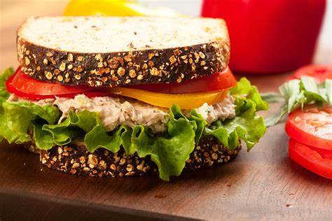
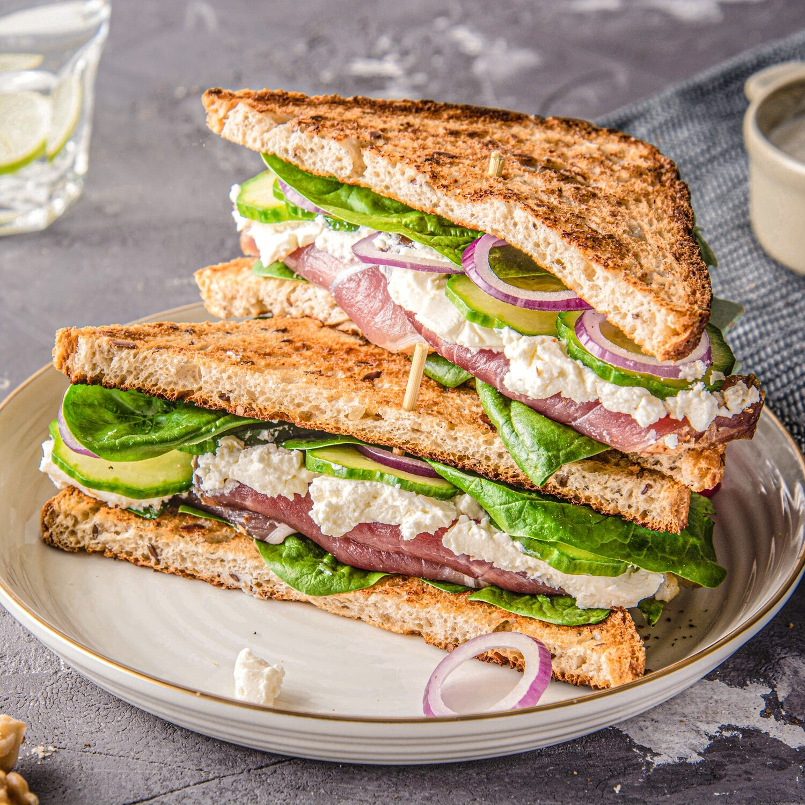

SANDWICH: Your easy fix from the getgo!

They are delicious, they are easy and they are your saviors in the times of deep hunger and low bank of ingredients and will to cook. We are talking about the good old sandwich, you can make it as simple as you want or get creative and spruce it up with the most exotic ingredients in town. A sandwich will never disappoint, and satiate you to the core of your heart. Paul Lynde remarked correctly, 'Sandwiches are wonderful. You don't need a spoon or a plate!' And we cant agree more.
Elaborate or simple, stuffed or layered, grilled or toasted, we love sandwiches! They're easy to make, easy to eat and always filling. Don't know what to do with that sudden snack attack? Create a wholesome sandwich that won't leave you hungry. If you're short on time, look no further. Fix yourself a quick meal on-the-go.
CALORIE INTAKE: 230 KCAL PER SERVING
Here are the key steps to read before you start so you know where you are going:

Material Needed-
1.Sliced sandwich bread
2.Favorite condiments that you want on your sandwich
3.Favorite sandwich sliced meat
4.Favorite cheese
5.Lettuce
6.Tomatoes
7.Pickles
8.Knives (1 for slicing, and 1 for spreading condiments)
9.Plate
10.Paper towels
11. Assemble the ingredients between two slices of bread and there you have it !
We hope this tutorial has helped you as much as it helped us!!